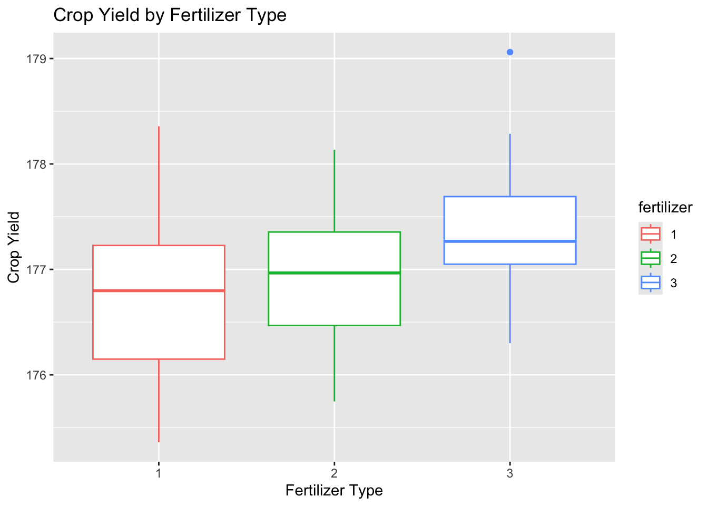
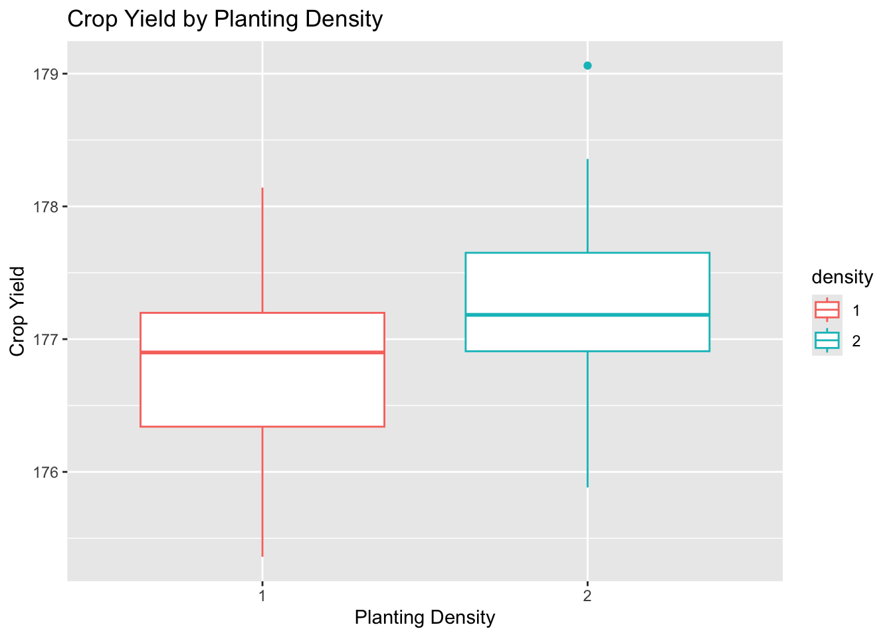
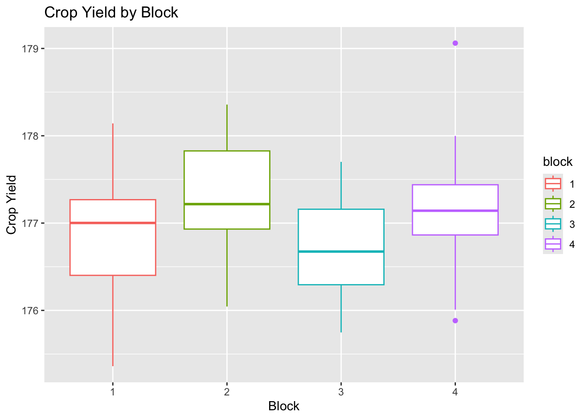
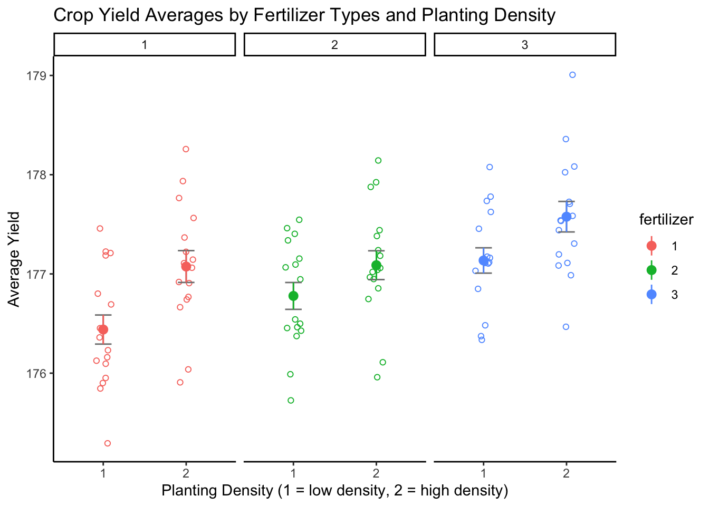
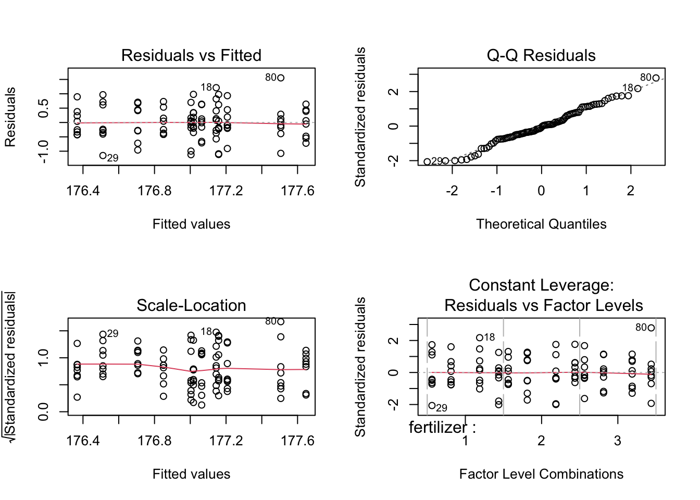
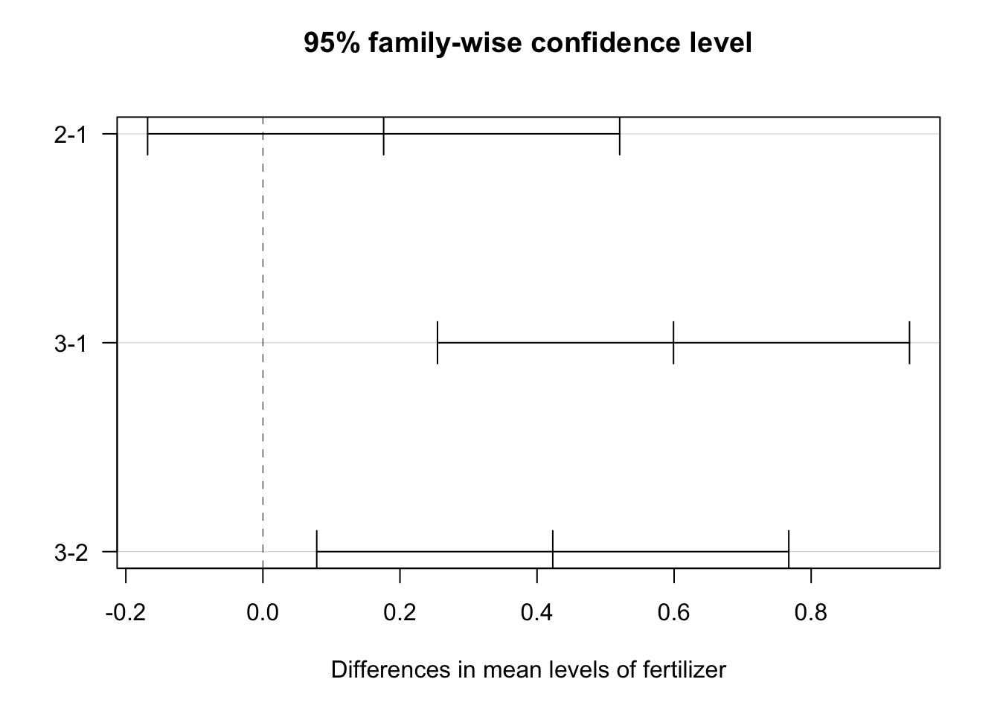

# Uncomment the following code to install required packages
# gt and tidymodels used for presentation-ready table:
# install.packages("gt")
# install.packages("tidymodels")
# AICcmodavg used for AIC table:
# install.packages("AICcmodavg")
# tidyverse for data transformation:
# install.packages("tidyverse")
# Load the required packages
library(gt)
library(tidymodels)
library(AICcmodavg)
library(tidyverse)
# read in the crop data dataset downloaded from
# https://www.scribbr.com/wp-content/uploads//2020/03/crop.data_.anova_.zip
crop_data_df <- read_csv("../data/04_crop_data.csv")19 Two-Way ANOVA
19.1 Introduction
The following two-way ANOVA lesson is based on “Two-Way ANOVA | Examples & When to Use It”, a tutorial by Rebecca Bevans.
A two-way ANOVA examines the influence of two or more independent categorical variables, also known as factors, on a continuous dependent variable. Each factor must have at least two levels, which are the groups within each factor being analyzed. In this lesson, we will see an example of how to test for these assumptions and how to conduct a type I two-way ANOVA once we know they have been met.
An interaction occurs when the effect of one factor depends on the level of another factor. The two-way ANOVA method allows us to measure:
Main Effects - the individual effect of one factor on the dependent variable, and
Interaction Effects - the extent to which the effects of one factor change across different levels of another factor.
19.2 How Does a Two-Way ANOVA Work?
The F test, a group-wise comparison test, is used in an ANOVA to determine statistical significance. The outcome of an F test, the F statistic, measures how different a groups’ variances are to the overall variance of the dependent variable. When the variance is higher between groups than within the group, the F statistic will be greater. A large F statistic suggests there’s a low likelihood that the observed difference is due to chance, and thus, the factor likely has an effect on the outcome.
For comparison, a critical value is calculated based on the desired alpha (α) and degrees of freedom of all groups. If the F statistic is greater than the F critical value, the results are considered statistically significant. For example, if the F statistic is greater than the F critical value at α = 0.05, then the p-value will be less than 0.05. For a model with two factors, we can generate three F statistics and three associated p values to test three possible hypotheses:
Null Hypotheses
- H01: The population means of the first factor are equal.
- H02: The population means of the second factor are equal.
- H03: There is no interaction effect, that is, the effect of one factor does not depend on the value of the other factor.
Alternative Hypotheses
- HA1: The population means of the first factor are not equal.
- HA2: The population means of the second factor are not equal.
- HA3: There is an interaction effect, that is, the effect of one factor depends on the value of the other factor.
19.2.1 Assumptions
Three assumptions must be met before conducting a two-way ANOVA:
Homogeneity of variance: The variances for each group should be roughly equal. If the groups do not have equal variances, a non-parametric test, such as the Kruskal-Wallis test, may be used.
Independence of observations: The observations in each group are independent of each other and the observations within groups were obtained by a random sample. This can be assumed to be true so long as the experiment is properly designed. If observations are grouped in categories, this effect should be accounted for with the use of a blocking variable or a repeated-measures ANOVA.
Normally distributed dependent variable: The values of the dependent variable should follow a normal distribution.
19.3 Two-Way ANOVA Table
The following table includes the calculations used in a two-way ANOVA. For more detailed information on these calculations, please read Models and Calculations for the Two-Way ANOVA, a lesson by the National Institute of Standards and Technology.
In the ANOVA table, the main effect A has k levels and the main effect B has l levels. N represents the total sample size.
| Source of Variation | Sum of Squares | Degrees of freedom | Mean Squares | F value |
|---|---|---|---|---|
| Factor A | \(SS_A\) | \(k-1\) | \(MS_A\) | \(F_A\) |
| Factor B | \(SS_B\) | \(l-1\) | \(MS_B\) | \(F_B\) |
| Interaction AB | \(SS_{AB}\) | \((k-1)(l-1)\) | \(MS_{AB}\) | \(F_{AB}\) |
| Error | \(SS_E\) | \(N - kl\) | \(MS_E\) | |
| Total | \(SS_T\) | \(N-1\) |
Where
- \[ MS_E := \frac{SS_E}{N-kl} \]
- \[ MS_A := \frac{SS_A}{k-1} \text{ and } F_A := \frac{MS_A}{MS_E} \]
- \[ MS_B := \frac{SS_B}{l-1} \text{ and } F_B := \frac{MS_B}{MS_E} \]
- \[ MS_{AB} := \frac{SS_{AB}}{(k-1)(l-1)} \text{ and } F_{AB} := \frac{MS_{AB}}{MS_E} \]
We explain these components as:
- \(SS_A\): Factor \(A\) main effect sums of squares, df = \(k-1\)
- \(SS_B\): Factor \(B\) main effect sums of squares, df = \(l-1\)
- \(SS_{AB}\): interaction sum of squares, df = \((k-1)(l-1)\)
- \(SS_E\): error sum of squares, df = \(N-kl\)
- \(SS_T\): Total sums of squares, df = \(N-1\)
19.4 Crop Yield Two-Way ANOVA Example
We will use the agricultural crop yield dataset from the Two-Way ANOVA lesson lesson in our example, which can be directly downloaded here.
In this example, corn was planted in one of four blocks within a field, in either high or low density, and fertilized with one of three types of fertilizer. Their yield in bushels per acre was then measured. The three factors of this experiment with their associated levels are:
- Type of fertilizer (type 1, 2, or 3)
- Planting density (1 = low, 2 = high)
- Block number in the field (block 1, 2, 3, or 4)
19.4.1 Hypotheses
Suppose we want to use a two-way ANOVA to examine whether the type of fertilizer and planting density (factors) have an effect on the average crop yield (dependent variable). To answer this question, the following three hypotheses will be tested:
Null Hypotheses
- H01: Fertilizer type has no effect on average crop yield
- H02: Planting density has no effect on average crop yield
- H03: The effects of fertilizer type and planting density on average yield are independent of each other (no interaction exists)
Alternative Hypotheses
- H11: Fertilizer type has an effect on average crop yield
- H12: Planting density has an effect on average crop yield
- H13: The effects of fertilizer type and planting density on average yield are not independent of each other (no interaction occurs)
19.4.2 Loading Libraries and Data
First, we will load our required packages and read in the crop yield dataset. The tidyverse package will be used to transform the data. The tidymodels and gt packages are necessary for creating presentation-ready tables of results. Finally, the AICcmodavg package will be used to construct an AIC table with which to compare our models (more on this later).
19.4.3 Data Exploration
The first few datapoints of the crop yield dataset were inspected and summary statistics were performed on the entire dataset to examine the structure, center, and spread of the data.
# show first six rows of the dataset
head(crop_data_df)
# overview of summary statistics
summary(crop_data_df)# A tibble: 6 × 4
density block fertilizer yield
<dbl> <dbl> <dbl> <dbl>
1 1 1 1 177.
2 2 2 1 178.
3 1 3 1 176.
4 2 4 1 178.
5 1 1 1 177.
6 2 2 1 177.
density block fertilizer yield
Min. :1.0 Min. :1.00 Min. :1 Min. :175.4
1st Qu.:1.0 1st Qu.:1.75 1st Qu.:1 1st Qu.:176.5
Median :1.5 Median :2.50 Median :2 Median :177.1
Mean :1.5 Mean :2.50 Mean :2 Mean :177.0
3rd Qu.:2.0 3rd Qu.:3.25 3rd Qu.:3 3rd Qu.:177.4
Max. :2.0 Max. :4.00 Max. :3 Max. :179.1 19.4.4 Transform Treatment Factors Into R Factors
Note that the fertilizer, density, and block vectors are read in as numeric class objects, so we must convert them to the factor class. We will also specify the reference groups for each factor: fertilizer 1, low density, and block 1. If not specified, reference groups are automatically assigned in alphabetical order.
19.4.4.1 Boxplots of Factors
Box plots for each factor were created to further examine the spread and center of the data using ggplot2.
# create box plot of yield by fertilizer
plot_fertilizer <-
ggplot(data = crop_data_df) +
aes(
x = as.factor(fertilizer),
y = yield,
color = fertilizer
) +
labs(
title = "Crop Yield by Fertilizer Type",
x = "Fertilizer Type",
y = "Crop Yield"
) +
geom_boxplot()
plot_fertilizer
# yield by density
plot_density <-
ggplot(data = crop_data_df) +
aes(
x = as.factor(density),
y = yield,
color = density
) +
labs(
title = "Crop Yield by Planting Density",
x = "Planting Density",
y = "Crop Yield"
) +
geom_boxplot()
plot_density
# yield by block
plot_block <-
ggplot(data = crop_data_df) +
aes(
x = as.factor(block),
y = yield,
color = block
) +
labs(
title = "Crop Yield by Block",
x = "Block",
y = "Crop Yield"
) +
geom_boxplot()
plot_block
The data for each level appear to be approximately normally distributed with roughly equal variance and few outliers.
19.4.4.2 Combined Boxplot of Crop Yield by Fertilizer and Density
To help visualize the data, a combined box plot visualizing the effects of fertilizer and density on average crop yield was created. The y-axis indicates the average crop yield. The x-axis is divided by fertilizer type (labeled at the top of the graph) and indicates the planting density for each level of the fertilizer factor.
anova_plot <-
ggplot(crop_data_df) +
aes(
x = density,
y = yield,
group = fertilizer,
color = fertilizer
) +
geom_point(
cex = 1.5,
pch = 1.0,
# set point positions to randomly jitter so points don't overlap
position = position_jitter(w = 0.1, h = 0.1)
)
anova_plot <- anova_plot +
# compute summary stats to create error bars
stat_summary(
# set calculation for error bar parameters to mean_se
fun.data = 'mean_se',
geom = 'errorbar',
width = 0.2,
color = "grey50"
) +
# create points for level means
stat_summary(
# set calculation for mean parameter to mean_se
fun.data = 'mean_se',
geom = 'pointrange'
)
anova_plot <- anova_plot +
# create three boxplots side by side for each fertilizer level
facet_wrap(~ fertilizer)
anova_plot <- anova_plot +
theme_classic() +
labs(
title = "Crop Yield Averages by Fertilizer Types and Planting Density",
x = "Planting Density (1 = low density, 2 = high density)",
y = "Average Yield"
)
anova_plot
The differing means for each level of fertilizer and density suggest that the factors have an effect on average yield. Before we can test whether these potential effects are statistically significant, we must first check that the data meet the ANOVA assumptions. To do this, we will generate a two-way ANOVA and run diagnostics on the model.
19.4.5 Performing the Two-Way ANOVA with Interaction and Blocking Variables
Recall that the two-way ANOVA can actually account for more than two factors. The crops were planted across various blocks whose conditions may differ in terms sunlight, moisture, etc. This could possibly lead to confounding, so it is important to control for the possible effect of these differences by adding this third factor to our model.
A two-way ANOVA was created to model the effects of fertilizer, density, the interaction between fertilizer and density, and the blocking factor. In the following code, the argument fertilizer * density is equivalent to fertilizer + density + fertilizer : density, where fertilizer : density represents the interaction term.
Are your data balanced?
Because the crop data are balanced (the sample sizes across the levels within each factor are equal), we will use the base-R function aov(), which uses Type I sums of squares. If your data are unbalanced, use a different function to conduct a Type II ANOVA (for data with no significant interaction) or Type III ANOVA (for data with significant interaction).
# performing two-way anova with fertilizer, density, fertilizer:density
# interaction and blocking factor
full_model <-
# 'fertilizer * density' = fertilizer + density + fertilizer:density interaction
aov(yield ~ fertilizer * density + block, data = crop_data_df)19.4.6 Checking ANOVA Assumptions
We will now create diagnostic plots, which include a residuals vs fitted plot, scale-location plot, Q-Q plot, and constant leverage plot, to evaluate the homoscedasticity of our data. Please read Understanding Diagnostic Plots for Linear Regression Analysis for more information on these plots.
# set plot parameter to display 2 x 2 plots in output
par(mfrow=c(2,2))
# plot default diagnostic plots of full_model
plot(full_model)
The residual vs fitted plot shows the data are randomly spread about the “0” line with no large outliers, so we can assume the factors have equal variances. Similarly, the scale-location plot shows an approximately horizontal line with randomly spread points, indicating equal variances. Thus, the homoscedasticity assumption is met.
The points of the Q-Q residuals plot roughly follow the reference line, indicating the data are normally distributed. We can conclude the normality assumption is met.
The constant leverage plot displays a horizontal “0” value line with points randomly spread around it, indicating the spread of the points are the same at different levels. No points lie outside of the critical value lines (not visible in the graph due to scale), indicating no outliers exist that could skew the data.
19.4.7 Two-Way ANOVA - Full Model Interpretation
Now that we have verified that the data satisfy the ANOVA assumptions, we may conduct the two-way ANOVA to test the hypotheses. Let’s interpret the results of the ANOVA of the full model:
table_full <- full_model %>%
# turn model into data.frame of parameters
tidy() %>%
# create gt table
gt()
# customizing gt table header
table_full |>
tab_header(
title = "Two-Way ANOVA of Crop Yield - Full Model",
subtitle = "for main full model (y ~ fertilizer * density + block)"
)| Two-Way ANOVA of Crop Yield - Full Model | |||||
|---|---|---|---|---|---|
| for main full model (y ~ fertilizer * density + block) | |||||
| term | df | sumsq | meansq | statistic | p.value |
| fertilizer | 2 | 6.0680466 | 3.0340233 | 8.9443603 | 0.0002909717 |
| density | 1 | 5.1216812 | 5.1216812 | 15.0988167 | 0.0001972614 |
| block | 2 | 0.4861389 | 0.2430695 | 0.7165735 | 0.4912504731 |
| fertilizer:density | 2 | 0.4278183 | 0.2139091 | 0.6306083 | 0.5346558069 |
| Residuals | 88 | 29.8505477 | 0.3392108 | NA | NA |
The block variable’s p value of p = 0.49 and the interaction term’s p value of p = 0.53 are not significant at the α = 0.05 level. Hence, neither have a statistically significant effect on the crop yield. Because they do not add information to the model, They may be removed from the final model.
19.4.8 Two-Way ANOVA - Density + Fertilizer + Interaction
We will now run a two-way ANOVA on a new model using the density, fertilizer, and interaction factors to investigate whether these terms are significant.
# performing the two-way ANOVA with interaction
interaction <-
# 'fertilizer * density' = fertilizer + density + fertilizer:density interaction
aov(yield ~ fertilizer * density, data = crop_data_df)
table_int <- interaction %>%
# turn model into data.frame of parameters
tidy() %>%
# create gt table
gt()
# customizing table header
table_int |>
tab_header(
title = "Two-way ANOVA of Crop Yield - Interaction Model",
subtitle = "for interaction model (y ~ fertilizer * density)"
)| Two-way ANOVA of Crop Yield - Interaction Model | |||||
|---|---|---|---|---|---|
| for interaction model (y ~ fertilizer * density) | |||||
| term | df | sumsq | meansq | statistic | p.value |
| fertilizer | 2 | 6.0680466 | 3.0340233 | 9.0010522 | 0.0002731890 |
| density | 1 | 5.1216812 | 5.1216812 | 15.1945174 | 0.0001864075 |
| fertilizer:density | 2 | 0.4278183 | 0.2139091 | 0.6346053 | 0.5325000914 |
| Residuals | 90 | 30.3366866 | 0.3370743 | NA | NA |
The p value for the interaction term is greater than 0.05, hence we fail to reject the null hypothesis (H03) and conclude that there is no statistically significant interaction effect between fertilizer type and crop density on average yield. The interaction term should also be removed from the model.
19.4.9 Two-Way ANOVA - Density + Fertilizer
Because the interaction term was not significant, we will remove it from our model and perform a two-way ANOVA on a model with only the density and fertilizer factors.
# performing the two-way ANOVA without the interaction term
main_effects <-
aov(yield ~ fertilizer + density, data = crop_data_df)
table_main <- main_effects %>%
# turn model into data.frame of parameters
tidy() %>%
# create gt table
gt()
# customizing table header
table_main |>
tab_header(
title = "Two-Way ANOVA of Crop Yield - Main Effects Model",
subtitle = "for main effects model (y ~ fertilizer + density)"
)| Two-Way ANOVA of Crop Yield - Main Effects Model | |||||
|---|---|---|---|---|---|
| for main effects model (y ~ fertilizer + density) | |||||
| term | df | sumsq | meansq | statistic | p.value |
| fertilizer | 2 | 6.068047 | 3.0340233 | 9.073123 | 0.0002532992 |
| density | 1 | 5.121681 | 5.1216812 | 15.316179 | 0.0001741418 |
| Residuals | 92 | 30.764505 | 0.3343968 | NA | NA |
Without the interaction term, we see that the p values for both fertilizer type and planting density are significant at the α = 0.05 level. Thus, we reject null hypotheses H01 and H02 and conclude that both fertilizer and density have a statistically significant main effect on crop yield.
19.5 Determining the Best-Fitting Model Using AIC
The Akaike information criterion (AIC) is another method that can be used to determine the model that best fits the data. The model that explains the greatest amount of the variation in the data using the fewest possible independent variables is considered the best-fitting model. The lower the AIC value, the more variation is explained by the model.
# creating a list of models to compare and their respective names
model_set <- list(main_effects, interaction, full_model)
model_names <- c("main_effects", "interaction", "full_model")
# using AICtab to compare models
gt_fmt <-
aictab(model_set, modnames = model_names)
# create gt table using AIC
gt_print <-
gt(gt_fmt)
gt_print| Modnames | K | AICc | Delta_AICc | ModelLik | AICcWt | LL | Cum.Wt |
|---|---|---|---|---|---|---|---|
| main_effects | 5 | 173.8562 | 0.000000 | 1.00000000 | 0.81041300 | -81.59474 | 0.8104130 |
| interaction | 7 | 177.1178 | 3.261693 | 0.19576377 | 0.15864950 | -80.92256 | 0.9690625 |
| full_model | 9 | 180.3873 | 6.531150 | 0.03817497 | 0.03093749 | -80.14714 | 1.0000000 |
As shown in this table, the main_effects model, which only includes the fertilizer and density variables without their interaction term, has the lowest AIC and is therefore the best fit for our crop data analysis.
19.6 Post-Hoc Testing (Tukey HSD)
We now know which parameters are significant, however, we are also interested in learning how the levels of the factors differ from each other. To quantify these differences, the Tukey’s Honestly-Significant-Difference test can be used.
# Performing Tukey HSD on the final model (yield ~ fertilizer + density)
tukey_crop <- TukeyHSD(main_effects)
tukey_crop %>%
# turn model into data.frame of parameters
tidy %>%
# create gt table
gt() %>%
tab_header(
title = "Tukey Multiple Comparisons of Means",
subtitle = "for main effects model (y ~ fertilizer + density)"
)| Tukey Multiple Comparisons of Means | ||||||
|---|---|---|---|---|---|---|
| for main effects model (y ~ fertilizer + density) | ||||||
| term | contrast | null.value | estimate | conf.low | conf.high | adj.p.value |
| fertilizer | 2-1 | 0 | 0.1761687 | -0.16822506 | 0.5205625 | 0.4452958212 |
| fertilizer | 3-1 | 0 | 0.5991256 | 0.25473179 | 0.9435194 | 0.0002218678 |
| fertilizer | 3-2 | 0 | 0.4229569 | 0.07856306 | 0.7673506 | 0.0119381379 |
| density | 2-1 | 0 | 0.4619560 | 0.22752045 | 0.6963916 | 0.0001741423 |
This table shows the pairwise differences between each level of the factors. Comparisons with p values less than 0.05 are considered significant:
- fertilizer type 1 vs 3
- fertilizer type 2 vs 3
- low vs high density
To visualize the differences between the levels of each factor, the 95% family-wise confidence intervals of the pairs for fertilizer and density were plotted below. The x-axes of the plots display the difference in means between the paired levels. The y-axis denotes the pair being compared.
# plot tukey confidence intervals and set tick marks to horizontal (las = 1)
# position
plot(tukey_crop, las = 1)

Note that the significant confidence intervals do not include zero. From this plot, we see that only the fertilizer comparison of type 1 and 2 confidence interval includes 0. Thus, there is no statistically significant difference in the average crop yield produced by fertilizer 1 vs fertilizer 2. 95% family-wise confidence intervals for all other comparisons are statistically significant at the α = 0.05 level.
19.7 ANOVA vs. Linear Regression
The model underlying the ANOVA we just performed is actually a linear regression. Let’s see what results we would get if we used linear regression to model the same relationships:
# create linear regression model of yield ~ fertilizer + density
crop_lm <- lm(yield ~ fertilizer + density, data = crop_data_df)
summary(crop_lm)
Call:
lm(formula = yield ~ fertilizer + density, data = crop_data_df)
Residuals:
Min 1Q Median 3Q Max
-1.16523 -0.30208 -0.05802 0.42576 1.47375
Coefficients:
Estimate Std. Error t value Pr(>|t|)
(Intercept) 176.5261 0.1180 1495.490 < 2e-16 ***
fertilizer2 0.1762 0.1446 1.219 0.226115
fertilizer3 0.5991 0.1446 4.144 7.57e-05 ***
density2 0.4620 0.1180 3.914 0.000174 ***
---
Signif. codes: 0 '***' 0.001 '**' 0.01 '*' 0.05 '.' 0.1 ' ' 1
Residual standard error: 0.5783 on 92 degrees of freedom
Multiple R-squared: 0.2667, Adjusted R-squared: 0.2428
F-statistic: 11.15 on 3 and 92 DF, p-value: 2.601e-06The output from the linear regression model indicate a significant difference in average yield exists between crops fertilized with fertilizer 3 and 1 (p = 7.57 e-05) but not fertilizers 1 and 2 (p = 0.22). Furthermore, the average yield for high density acres is significantly different than low density acres (p < 0.001). These findings are consistent with the results of the Tukey’s HSD tests.
Recall that the two-way ANOVA compares the variance within all levels of a factor to the total variation of the model. Similarly, the linear regression quantifies the variation of each group (or “level”) from the mean using dummy variables. Both use the same computations and thus the sum of squares for the independent variables are the same in the outputs of both the two-way ANOVA and linear regression. Because the density variable consists of two groups, its p value (p = 0.00017) is also the same in both models. The p value(s) for fertilizer differs between the two, however, because the three fertilizer groups are split into three dummy variables in the linear regression and compared against the group mean individually. The two-way ANOVA, on the other hand, is only concerned with the total variance within the fertilizer factor. Read “Common statistical tests are linear models” to learn more about how ANOVAs and many other statistical tests are simply different flavors of linear regression.
19.8 Conclusions
There is a statistically significant difference in average crop yield by both the fertilizer type and planting density variables with F values of 9.018 (p < 0.001) and 15.316 (p < 0.001) respectively. The interaction between these two terms was not significant.
The Tukey post-hoc test showed significant pairwise differences in average yield between fertilizer types 1 and 3 and between type 2 and 3. It also depicted significant differences in average yield between low and high planting density. Therefore, corn fertilized with fertilizer type 3 produced significantly more bushels per acre than those with fertilizers type 1 and 2, and acres of corn planted at high density produced more bushels than those planted at low density.